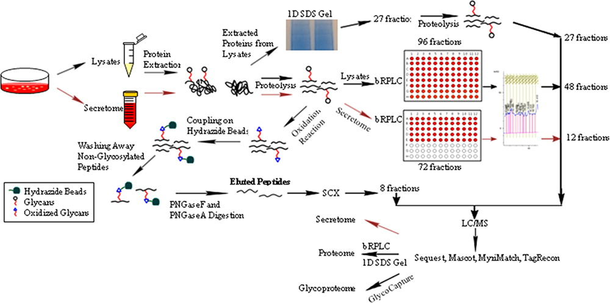

To complement the recent genomic sequencing of Chinese hamster ovary (CHO) cells, proteomic analysis was performed on CHO cells including the cellular proteome, secretome, and glycoproteome using tandem mass spectrometry (MS/MS) of multiple fractions obtained from gel electrophoresis, multidimensional liquid chromatography, and solid phase extraction of glycopeptides (SPEG). From the 120 different mass spectrometry analyses generating 682,097 MS/MS spectra, 93,548 unique peptide sequences were identified with at most 0.02 false discovery rate (FDR). A total of 6,164 grouped proteins were identified from both glycoproteome and proteome analysis, representing an 8-fold increase in the number of proteins currently identified in the CHO proteome
Furthermore, this is the first proteomic study done using the CHO genome exclusively, which provides for more accurate identification of proteins. From this analysis, the CHO codon frequency was determined and found to be distinct from humans, which will facilitate expression of human proteins in CHO cells. Analysis of the combined proteomic and mRNA data sets indicated the enrichment of a number of pathways including protein processing and apoptosis but depletion of proteins involved in steroid hormone and glycosphingolipid metabolism. Five-hundred four of the detected proteins included N-acetylation modifications, and 1292 different proteins were observed to be N-glycosylated. This first large-scale proteomic analysis will enhance the knowledge base about CHO capabilities for recombinant expression and provide information useful in cell engineering efforts aimed at modifying CHO cellular functions.
Baycin-Hizal, Deniz, David L. Tabb, Chaerkady Raghothama, Lily Chen, Nathan E. Lewis, Harish Nagarajan, Vishaldeep Sarkaria, et al. "Proteomic Analysis of Chinese Hamster Ovary Cells." Journal of Proteome Research 11, no. 11 (2012): 5265-5276.
© 2014 Johns Hopkins University